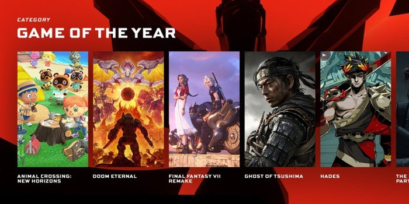

Los Mejores Video Juegos Del 2020
¿Como Estuvo La Industria De Los VideoJuegos En El 2020?
Los videojuegos en el aislamiento han servido de escape para muchos usuarios que pueden navegar mundos, o crearlos,
sin tener que salir de casa, pero del lado del negocio, el COVID-19 también ha convertido a los videojuegos en uno de los sectores
tecnológicos con mejor perspectiva de crecimiento para 2020, El COVID-19 y la llegada de nueva consolas harán, que tanto en México
como en el mundo, la industria de videojuegos registre crecimientos favorables. En 2019 la industria de videojuegos logró ventas
por 152,000 millones de dólares y para este año se espera que cierre con 159,300 millones de dólares en ganancias,
lo que significa un crecimiento del 9.3%, de acuerdo con cifras de la consultora Newzoo, En México,
que se espera juegue un papel importante en la región, se espera que este sector genere 2,200 millones de dólares,
un alza comparada con los 1,800 millones de dólares en 2019, de acuerdo a la misma consultora de videojuegos,
Un informe de Nielsen SuperData indicó que sólo en marzo de este año las ventas por juegos en línea representan
una venta mundial de 10,000 millones de dólares lo que representó un crecimiento del 11%, con respecto al mismo mes pero de 2019.
"Las personas están recurriendo a los juegos como una opción de entretenimiento confiable durante la crisis de COVID-19
y están utilizando el modo multijugador en línea para mantenerse en contacto con otros", dijo el informe de Nielsen.
Este mismo informe también precisa que la venta de consolas creció en este periodo, pasando de 830 millones de dólares a
inicios de año, a vender 1,500 millones de dólares durante marzo y abril.
¿Como Les Fue A Las Consolas Y A Los Nuevos Lanzamientos?
De las principales consolas de juegos, como Nintendo Switch, PlayStation 4 o Xbox One,
todas vieron un aumento de ventas en este primer trimestre, según el informe de Grupo NPD.
"El gasto en hardware en marzo de 2020 creció un 63% en comparación con el año anterior,
a 461 millones de dólares", dijo el analista de NPD Mat Piscatella a VentureBeat.
Los juegos más esperados para la segunda mitad del año, como The Last of Us 2 y Ghost of Tshushima
serán las que ayuden a que este segmento, y en especial la venta de consolas, se mantenga en
crecimiento constante mientras llega al mercado el nuevo hardware de Sony, con PlayStation 5 y
de Microsoft con Xbox Series X “Los juegos de consola crecerán 6.8%, llegando a generar
45,200 millones de dólares, e impactando a más de 729 millones de jugadores”, indicó el informe de
Newzoo, Sin embargo la consultora precisa que uno de los problemas colaterales que tendrá el
mercado será la distribución de estos títulos, lo que podría ajustar las cifras a lo largo del año.
“La distribución afectará la venta de títulos, sin embargo al final de año los lanzamientos
de consolas ajustarán ésta vertical de mercado”, puntualiza Newzoo.
Los Mejores Juegos Del Año 2020
- 1.The Last Of Us 2
- 2.CyberPunk 2077
- 3.Ghost Of Tsushima
- 4.Doom Eternal
- 5.Call Of Duty Black Ops: Cold War
Los Mejores Juegos Del Año 2021
- *Hades
- *Demons Souls
- *Dirt 5
- *Animal Crossing: New Horizons
- *Medall Of Honor: Above And Beyond

Los Mejores Momentos De Los Vidojuegos En EL 2020
En Este Enlace Puedes Consultar Una Tabla Sobre Los Videojuegos Mas Jugados De Cada Plataforma.
En Este Enlace Puedes Consultar Y Contestar Un Formulario.
Los Mejores Video Juegos Del 2020
¿Como Estuvo La Industria De Los VideoJuegos En El 2020?
Los videojuegos en el aislamiento han servido de escape para muchos usuarios que pueden navegar mundos, o crearlos, sin tener que salir de casa, pero del lado del negocio, el COVID-19 también ha convertido a los videojuegos en uno de los sectores tecnológicos con mejor perspectiva de crecimiento para 2020, El COVID-19 y la llegada de nueva consolas harán, que tanto en México como en el mundo, la industria de videojuegos registre crecimientos favorables. En 2019 la industria de videojuegos logró ventas por 152,000 millones de dólares y para este año se espera que cierre con 159,300 millones de dólares en ganancias, lo que significa un crecimiento del 9.3%, de acuerdo con cifras de la consultora Newzoo, En México, que se espera juegue un papel importante en la región, se espera que este sector genere 2,200 millones de dólares, un alza comparada con los 1,800 millones de dólares en 2019, de acuerdo a la misma consultora de videojuegos, Un informe de Nielsen SuperData indicó que sólo en marzo de este año las ventas por juegos en línea representan una venta mundial de 10,000 millones de dólares lo que representó un crecimiento del 11%, con respecto al mismo mes pero de 2019. "Las personas están recurriendo a los juegos como una opción de entretenimiento confiable durante la crisis de COVID-19 y están utilizando el modo multijugador en línea para mantenerse en contacto con otros", dijo el informe de Nielsen. Este mismo informe también precisa que la venta de consolas creció en este periodo, pasando de 830 millones de dólares a inicios de año, a vender 1,500 millones de dólares durante marzo y abril.
¿Como Les Fue A Las Consolas Y A Los Nuevos Lanzamientos?
De las principales consolas de juegos, como Nintendo Switch, PlayStation 4 o Xbox One, todas vieron un aumento de ventas en este primer trimestre, según el informe de Grupo NPD. "El gasto en hardware en marzo de 2020 creció un 63% en comparación con el año anterior, a 461 millones de dólares", dijo el analista de NPD Mat Piscatella a VentureBeat. Los juegos más esperados para la segunda mitad del año, como The Last of Us 2 y Ghost of Tshushima serán las que ayuden a que este segmento, y en especial la venta de consolas, se mantenga en crecimiento constante mientras llega al mercado el nuevo hardware de Sony, con PlayStation 5 y de Microsoft con Xbox Series X “Los juegos de consola crecerán 6.8%, llegando a generar 45,200 millones de dólares, e impactando a más de 729 millones de jugadores”, indicó el informe de Newzoo, Sin embargo la consultora precisa que uno de los problemas colaterales que tendrá el mercado será la distribución de estos títulos, lo que podría ajustar las cifras a lo largo del año. “La distribución afectará la venta de títulos, sin embargo al final de año los lanzamientos de consolas ajustarán ésta vertical de mercado”, puntualiza Newzoo.
Los Mejores Juegos Del Año 2020
Los Mejores Juegos Del Año 2021
Los Mejores Momentos De Los Vidojuegos En EL 2020
En Este Enlace Puedes Consultar Una Tabla Sobre Los Videojuegos Mas Jugados De Cada Plataforma.
En Este Enlace Puedes Consultar Y Contestar Un Formulario.